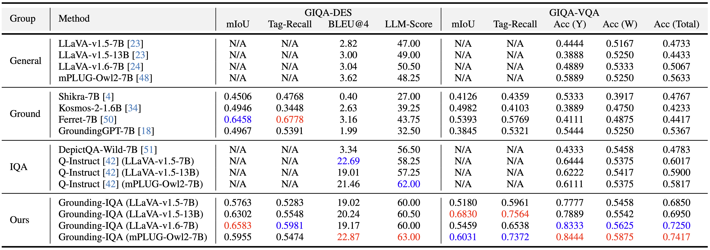
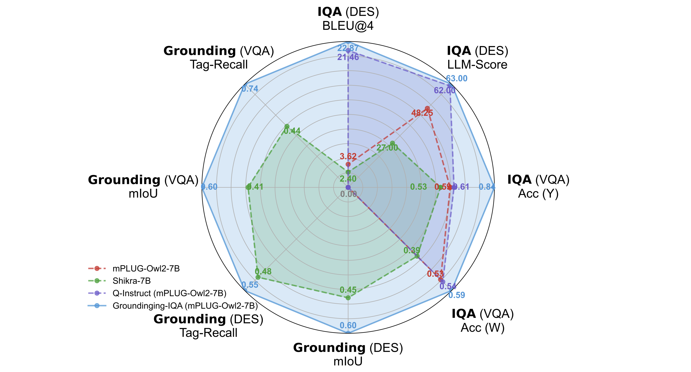
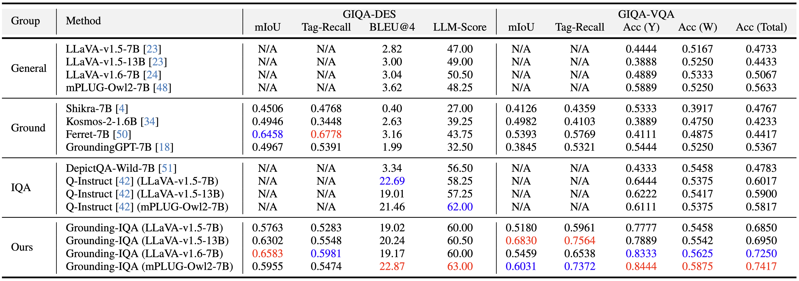
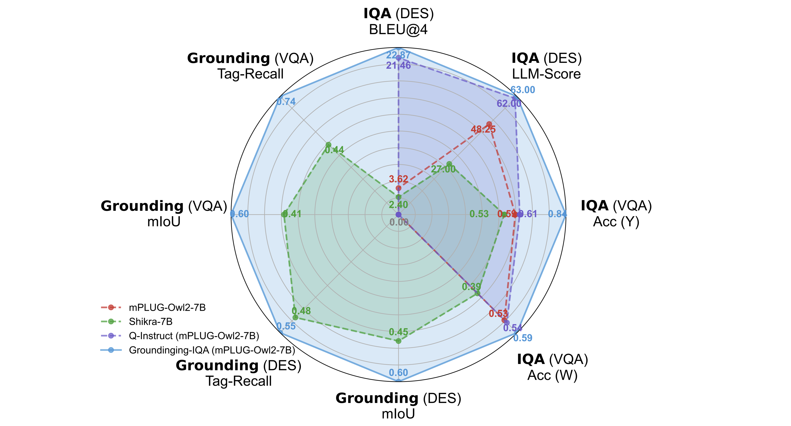
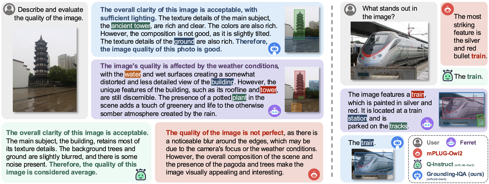

- Results on GIQA-DES and GIQA-VQA (Tab. 5 of the main paper)

- Radar Chat (Fig. 1 of the main paper)


Grounding-IQA combines multimodal referring and grounding with image quality assessment (IQA). (a) GIQA-DES: The quality description include precise locations (i.e., bounding boxes). (b) GIQA-VQA: The question (referring, bottom instance) or answer (grounding, top instance) contains specific locations.
The development of multimodal large language models (MLLMs) enables the evaluation of image quality through natural language descriptions. This advancement allows for more detailed assessments. However, these MLLM-based IQA methods primarily rely on general contextual descriptions, sometimes limiting fine-grained quality assessment. To address this limitation, we introduce a new image quality assessment (IQA) task paradigm, grounding-IQA. This paradigm integrates multimodal referring and grounding with IQA to realize more fine-grained quality perception. Specifically, grounding-IQA comprises two subtasks: grounding-IQA-description (GIQA-DES) and visual question answering (GIQA-VQA). GIQA-DES involves detailed descriptions with precise locations (e.g., bounding boxes), while GIQA-VQA focuses on quality QA for local regions. To realize grounding-IQA, we construct a corresponding dataset, GIQA-160K, through our proposed automated annotation pipeline. Furthermore, we develop a well-designed benchmark, GIQA-Bench. The benchmark comprehensively evaluates the model grounding-IQA performance from three perspectives: description quality, VQA accuracy, and grounding precision. Experiments demonstrate that our proposed task paradigm, dataset, and benchmark facilitate the more fine-grained IQA application.

We introduce an automated annotation pipeline to generate GIQA-160K, a high-quality dataset for Grounding-IQA. (a) GIQA-DES Pipeline: Constructs answers from image descriptions in four stages and generates questions from a predefined pool; (b) GIQA-VQA Pipeline: Generates the corresponding QA data utilizing descriptions from GIQA-DES and the advanced LLM (i.e., Llama3).
The GIQA-160K dataset consists of 42,960 images and 167,657 instruction-tuning samples. It is divided into two subtasks:





@article{chen2024grounding,
title={Grounding-IQA: Multimodal Language Grounding Model for Image Quality Assessment},
author={Chen, Zheng and Zhang, Xun and Li, Wenbo and Pei, Renjing and Song, Fenglong and Min, Xiongkuo and Liu, Xiaohong and Yuan, Xin and Guo, Yong and Zhang, Yulun},
journal={arXiv preprint arXiv:2411.17237},
year={2024}
}